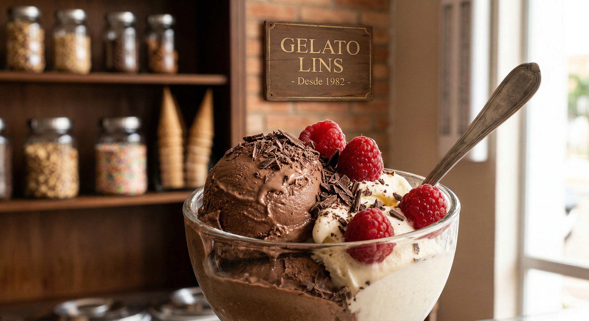

A Gelato Lins nasceu em 1982, no coração de Lins, com o objetivo de resgatar as receitas tradicionais de sorvetes artesanais. Utilizamos apenas ingredientes naturais e selecionados para garantir uma cremosidade inigualável em cada colherada
Nosso cardápio conta com mais de 30 opções, desde os clássicos como Baunilha com Favas de Madagascar até combinações exclusivas como Pistache da Sicília com Flor de Sal.
